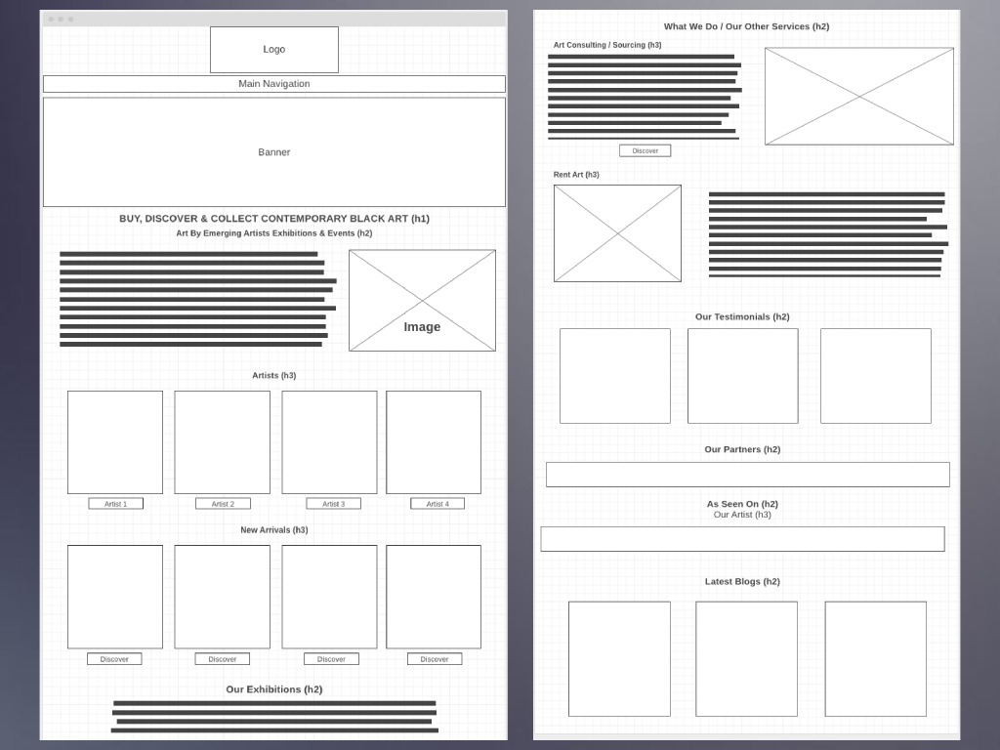
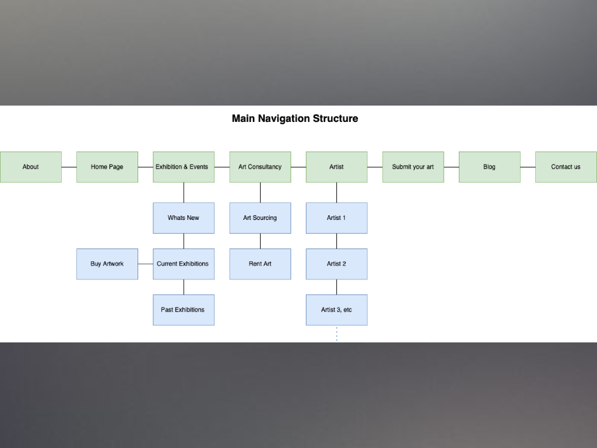
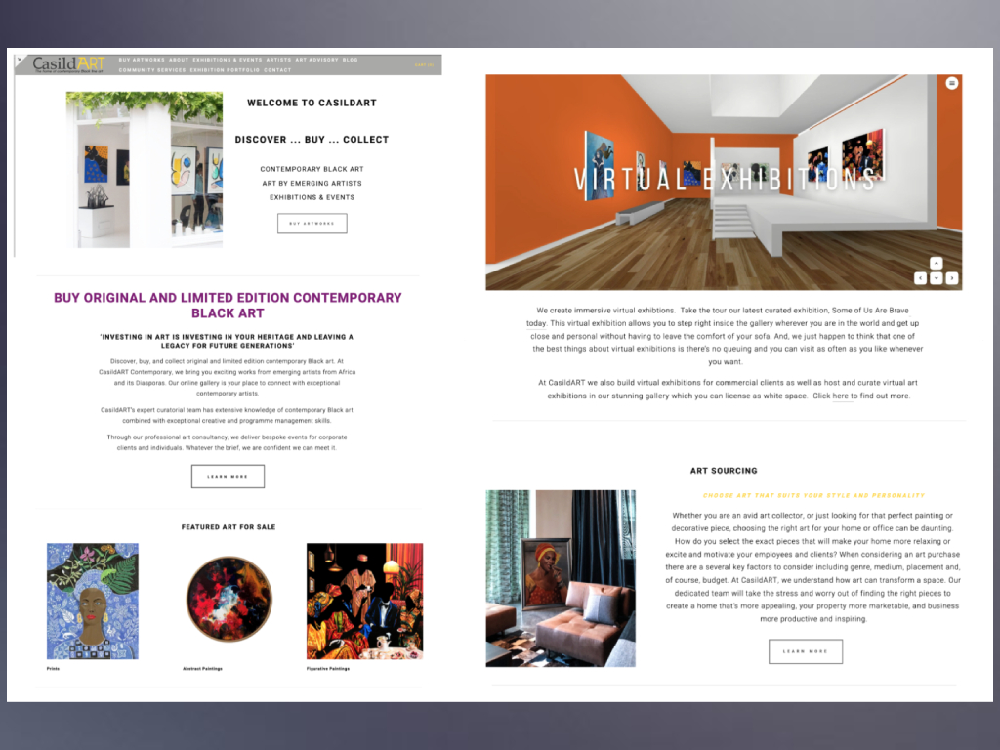

Website re-design
I help transform websites into a modern, user-friendly, and responsive online presence. I take a data-driven approach to website redesign, analyzing user behavior and feedback to identify areas for improvement. My design process involves creating wireframes, user interface (UI) designs, and prototypes that align with the clients brand identity and business goals. I also ensure that websites are optimized for search engines (SEO) and integrates seamlessly with the existing systems and third-party tools.

Wireframes
Wireframes are an essential part of the design process, as they allow us to map out the structure and functionality of your website or application before any visual design is created. I use a variety of tools and techniques to create wireframes that accurately represent the user experience and flow of your website or application.

Site Structure
A well-organized site structure and navigation system are critical to providing users with a seamless browsing experience. I create site structures and navigation systems that make it easy for users to find the information they need quickly and efficiently. I begin by analyzing your content and identifying the best way to categorize and organise it.

Before re-design
Choosing to implement a website redesign can transform your outdated or ineffective website into a modern, engaging, and user-friendly platform that effectively communicates your brand's message by working closely with you to understand your goals and objectives.

After re-design
I can create a custom design that aligns with your brand identity by using industry-standard tools and techniques to create a design that is visually appealing, easy to navigate, and optimized for conversion. The 'before and after' images showcase the dramatic difference that a redesign can make in improving the look and feel of your website.